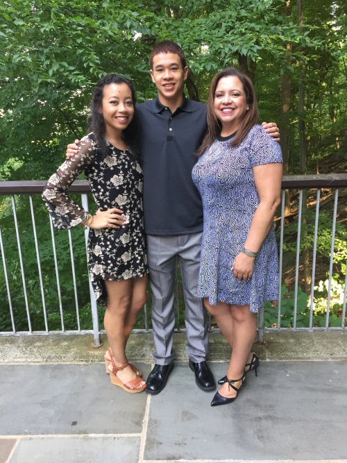

Me with my mom and my brother at a wedding this past Summer.
What better subject to create a website around than myself! My name is Alexa Lee and I was born in Sacramento, California and moved to Georgia when I was 10 years old. I am currently a Junior at the University of Georgia majoring in Sport Management and Entertainment and Media Studies. A typical day in my life looks like:
| Class | Monday | Tuesday | Wednesday | Thursday | Friday |
|---|---|---|---|---|---|
| 1st | CSCI 1100 Lab | Business Stat | CSCI 1100 Lab | Business Stat | Work |
| 2nd | CSCI 1100 | Marketing | CSCI 1100 | Marketing | |
| 3rd | Meeting | Management | Internship | Management |
When I'm not busy working as a Desk Attendant in Reed Hall, I love to watch sporting events. My favorite sport is baseball but football has slowly grown on me during my time here at UGA. I've always had a passion for baseball and I think it stems from my time playing softball as a child. My favorite sports teams include:
Here at UGA, I try to stay as active as I can. I am currently in the Delta Phi Epsilon sorority and intern at Seacrest Studios at Children's Healthcare of Atlanta. As an intern, I get to create my own radio show for kids along with four other college interns. After I graduate from UGA, I hope to pursue a career either working on television shows in Los Angeles or traveling around the country with different baseball teams to produce live broadcasts. I have been through many challenges over the last few years and therefore, I try to live by the mantra Never Give Up!
Thanks for visiting my web page and I hope you enjoyed getting to know a little more about me! If you have any questions and would like to contact me I can be reached at the following address:Email Link